لفة شيش طاووق לפת שיש טאווק
فيليه دجاج متبّل، مشوي على الفحم פילה עוף מתובל, צלוי על הגחלים
- فيليه دجاجפילה עוף
- ثوميةשום
- خيار مخللמלפפון חמוץ
- بطاطا مقليةצ'יפס
- خبز صاجלאפה
كبيرةגדולה 43₪
وسطבינונית 33₪
لحوم طازجة يوميًا בשר טרי כל יום
لفات، برغر، فلافل وسلطات تُحضَّر عند الطلب. اطلب هاتفيًا أو مُرّ علينا. לפות, בורגרים, פלאפל וסלטים שמוכנים בהזמנה. הזמינו בטלפון או קפצו אלינו.
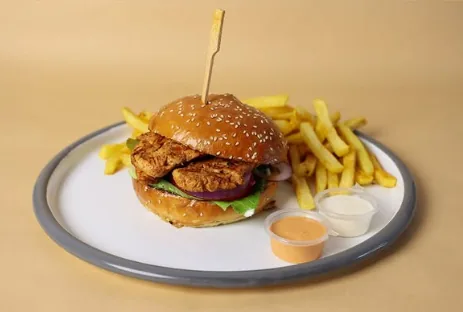
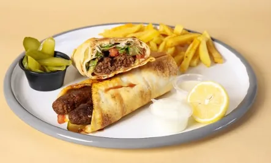
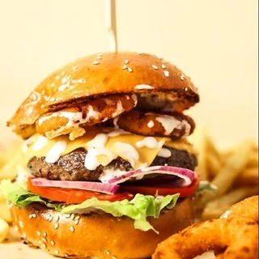
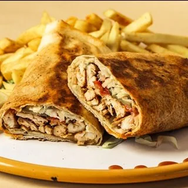
فيليه دجاج متبّل، مشوي على الفحم פילה עוף מתובל, צלוי על הגחלים
سجق حار مشوي على السيخ סוג'וק חריף על השיפוד
تُقلى عند الطلب، مع الخضار والطحينة מטוגן בהזמנה, עם ירקות וטחינה
لحم طازج مشوي على الفحم + بطاطا مقلية בשר טרי על הגחלים + צ'יפס
فيليه دجاج بدل اللحم + بطاطا פילה עוף במקום בשר + צ'יפס
خضار طازجة مع فيليه دجاج مشوي ירקות טריים עם פילה עוף בגריל
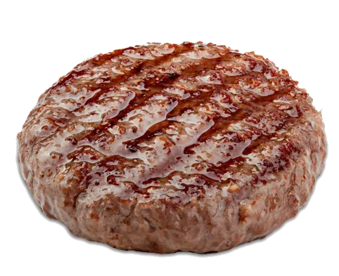
قطعة لحم إضافية لأي برغر קציצה נוספת לכל בורגר
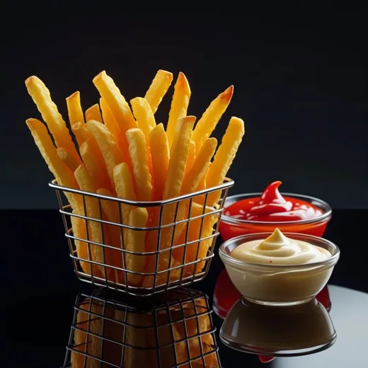
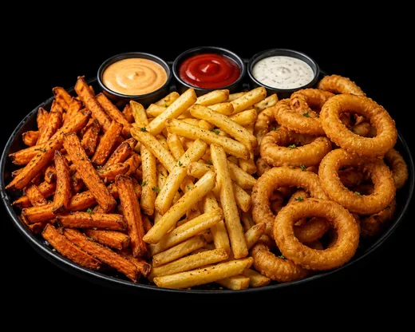
مع جبنة עם גבינה
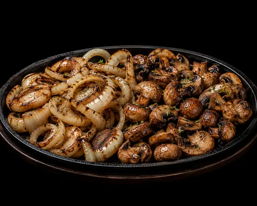
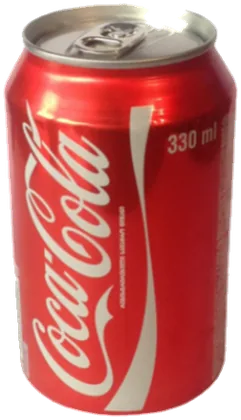
Coca-Cola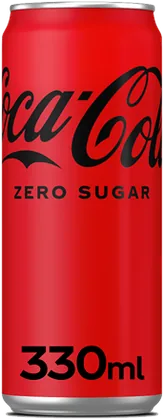
Coca-Cola Zero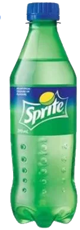
Sprite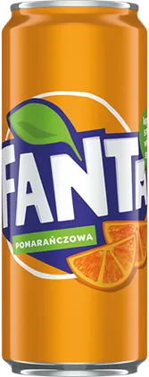
Fanta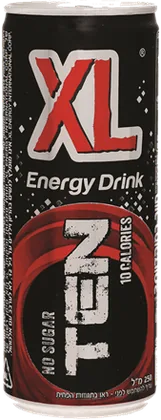
XL Ten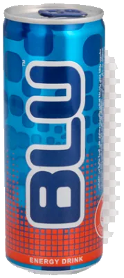
Blu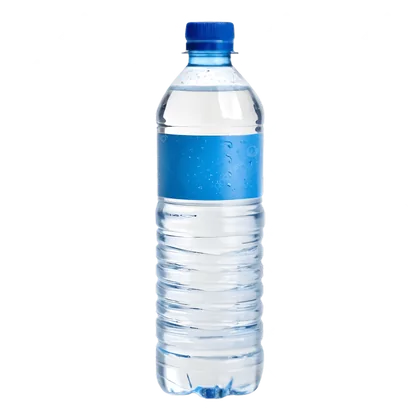
مياه · 5 ₪ מים · 5 ₪كل المشروبات الغازية כל המשקאות המוגזים 10 ₪
الأسعار مأخوذة من منشورات المطعم على انستغرام وقد تتغيّر — يُرجى التأكيد عبر الهاتف عند الطلب. تتوفّر عروض خاصة في ليالي المباريات وأيام محددة. המחירים נאספו מהפוסטים של המסעדה באינסטגרם וייתכן שהשתנו — נא לוודא בטלפון בעת ההזמנה. מבצעים מיוחדים בערבי משחקים ובימים נבחרים.
على خرائط جوجل בגוגל מפות
التقييم يُنشر على صفحتنا في جوجل — لا نحفظ أي شيء هنا. הביקורת מתפרסמת בעמוד הגוגל שלנו — כאן לא נשמר דבר.
اليوم مُعلَّم بالبرتقالي היום מסומן בכתום
الساعات قد تتغيّر في المناسبات وليالي المباريات — يفضّل الاتصال للتأكيد قبل الحضور. השעות עשויות להשתנות באירועים ובערבי משחקים — מומלץ להתקשר לפני ההגעה.
أبو سنان — كفر ياسيف
بجانب صالون هيثم شحادة
אבו סנאן — כפר יאסיף
ליד מספרת היתם שחאדה